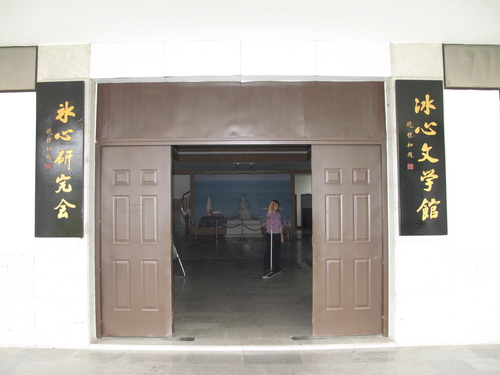
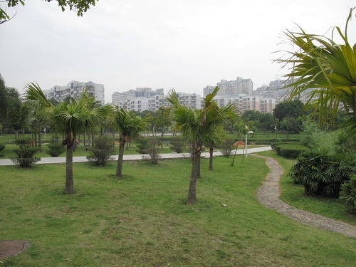
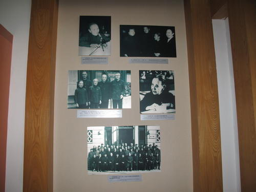

冰心文学馆正门

冰心文学馆外景

冰心参加民进会议照片
位于福建省福州市长乐市西洋中路。1997年5月开放 。冰心文学馆占地0.8公顷，以灰、白色为主要基调。丰富而不落俗套，朴素又不失大方，给人十分清新、典雅、悦目的感觉 。冰心文学馆的大门口挂有两块牌子，一是“冰心文学馆”，二是“冰心研究馆”，均赵朴初所书。一层为大堂 ，第二层为展厅，有大量的照片和实物，展出冰心的生平事迹和文学成就。与展厅同样重要的是冰心实物珍藏室，珍藏着大量冰心的手稿、版本及其他的实物 ，是学习冰心最好的地方。第三、四层为冰心研究中心，主要研究冰心的文学品格和冰心的爱心，并可举办小型的研究会议。院内一个大天井，种花植树，假山垒趣，绿草成茵，是一个良好的文学创作环境 。冰心文学馆是中宣部公布的 第四批全国爱国主义教育示范基地。